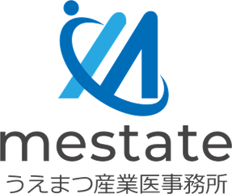

ストレスチェックWeb 手順書
メールアドレス・スマートフォンのない方の受検(実施事務従事者向け)
発行: うえまつ産業医事務所(Mestate LLC) / アプリURL: https://stres.mestate.jp

0. 考え方 ― 基本はメール、難しい方だけ別の方法で
受検の基本は、これまでどおりご本人のメールアドレスでの受検(配布URL・QRコード)です。メールアドレスやスマートフォンがない方、画面の操作が難しい方だけ、次の2つの方法で受けていただけます。どの方法でも、結果は同じように結果一覧・集団分析・労基署報告の数字に入ります。
ふつうの方法(基本)ご本人のスマホ・パソコンとメールアドレスで受検。
→ 配布URL・QRコードを案内
方法A: ログインIDで受検メールアドレスの代わりに、ログインIDと合言葉の紙を渡します。ご本人が職場の共用パソコン・タブレットなどで受検します。
方法B: 紙で回答専用の回答用紙に書いてもらい、実施事務従事者が回答を登録します。結果票は印刷して渡します。
| その方の状況 | おすすめの方法 |
|---|
| 自分のスマホ・パソコンとメールアドレスがある | ふつうの方法(配布URL・QRコード) |
| スマホはあるが、メールアドレスがない・使っていない | 方法A(IDの紙のQRコードを、ご自分のスマホで読み取って受検できます) |
| スマホはないが、職場のパソコン・タブレットなら操作できる | 方法A(共用の端末で受検) |
| 画面の操作そのものが難しい/端末を用意できない職場 | 方法B(紙) |
方法Aは、結果がその場でご本人に表示され、入力の手間もないため、できるだけ方法Aを先にご検討ください。紙(方法B)は、回答の登録と結果票の受け渡しに手間がかかる分、最後の手段とお考えください。
この作業は、回答という健康情報を扱うため、実施者(産業医)と、誓約を済ませた実施事務従事者だけが行えます。人事権を持つ方(上司・人事の責任者など)が、回答用紙の回収や登録を行うことはできません。操作はすべて記録されます。
1. 事前の準備
- 方法A用: 共用のパソコンかタブレットを1台、周りから画面が見えない場所(会議室・休憩室の隅など)に用意します。インターネットにつながり、ブラウザ(Chrome・Edge・Safari)が使えれば十分です。
- 方法B用: 封筒(人数分×2。回収用と、結果票をお返しする用)と、ホチキスをご用意ください。
- どちらも、対象の方の氏名・生年月日・部署が分かる名簿をお手元にご用意ください。
2. 対象の方を登録する(方法A・B 共通)
1メニューの「🪪 メール・スマホのない方」を開く
2氏名・生年月日・部署を入れて「登録する」
メールアドレスは不要です。生年月日は数字8けた(例: 19850304)で入力します。続けて何人でも登録できます。登録した方は下の一覧に並び、ログインID(数字8けた)が自動で付きます。
すでにご自分のメールアドレスでアカウントを作った方が「やはり紙で」と希望された場合は、この登録は不要です。画面のいちばん下「メールで登録済みの方が、紙での回答を希望したとき」から進めてください(→ 4 の手順)。
3. 方法A ― ログインIDで受検してもらう
1一覧で「IDの紙を印刷」を押す
その方のログインIDと合言葉(英字4つ+数字4つ)が入った案内の紙が出ます(A4に2名分。点線で切り取ります)。何人分かまとめて印刷することもできます(「まだ渡していない◯名のIDの紙をまとめて印刷」)。
合言葉は、この画面でしか表示されません(システムにも残していません)。かならずその場で印刷してください。印刷に失敗したとき・紙をなくしたときは「IDの紙を出し直す」で新しい合言葉を発行できます(前の合言葉は使えなくなります)。
2紙をご本人に直接渡す
ほかの人の目にふれないよう、封筒に入れるか、二つ折りにして手渡してください。机の上に置いておくことはお控えください。
3ご本人が受検する
紙に書いてある手順どおりです。① ログイン画面で「ログインIDで」を選ぶ → ② ログインIDと合言葉を入れる → ③ はじめに生年月日を入れる(ご本人の確認) → ④ 質問に答える(約10〜15分) → ⑤ 結果がその場で表示される → ⑥ ログアウト。
4操作に不安のある方へのお手伝い
端末の前までご案内し、ログインと生年月日の入力まではお手伝いいただいてかまいません。質問が始まったら席を離れ、回答の内容は見ないようにしてください。終わったらログアウトされているか、だけご確認ください。
5受検できたかを確認する
一覧の表示が「これから」→「IDの紙を渡し済み」→「ログイン済み・回答待ち」→「受検済み(ID)」と変わります。
方法Aの方は、結果の確認・会社への提供の同意・面接指導の申出を、ご本人が画面から行えます(ふつうの方法と同じです)。結果票を紙でほしいと言われたときは、一覧の「結果票を印刷」から印刷し、封筒に入れて封をしてお渡しください。
4. 方法B ― 紙で回答してもらう
1回答用紙を印刷する
一覧のその方の行の「回答用紙を印刷」(氏名・部署が入った表紙つき)、または右上の「白紙の回答用紙を印刷」(必要な部数をコピー)。A4・白黒で、表紙1枚+回答2〜3枚です。
2表紙と回答のページをホチキスでとめ、封筒を添えて渡す
提出の期限と提出先(実施事務従事者のお名前)を表紙に書き込んでからお渡しください。ご本人は、あてはまる番号を○で囲み、封筒に入れて封をして提出します。
3回収する
かならず実施事務従事者が直接受け取ってください(上司経由の回収はお控えください)。受け取った封筒は、登録するまで鍵のかかる場所で保管します。
4一覧で「紙の回答を登録」を押し、回答を入れる
はじめに表紙を見て
部署と性別を選びます。回答の入れ方は2通りです。
- 手で入れる: 用紙を上から順に見ながら、キーボードの 1〜4 を押すだけで次の設問へ進みます(57問で2〜3分)。マウスで番号を押してもかまいません。
- 写真・スキャンから読み取る: 回答のページだけ(氏名のある表紙は除く)をスマホで撮るかスキャンして選び、「AIで読み取る」を押すと、○の付いた番号が自動で入ります。読み取りは下書きです。かならず用紙と見比べて、ちがうところを直してください。黄色の行は読み取りに自信がない設問、赤い行は空欄です。
5用紙と見比べてから「この内容で結果を登録する」
登録すると、Webで受検したときと同じ計算で結果が確定します。用紙に空欄や、2つに○が付いた設問があるときは、推測で埋めず、封筒に戻してご本人に書き直してもらってください。
6結果票を印刷し、封筒に入れて封をして、ご本人に渡す
これが法律上の「結果の通知」にあたります。登録したら日をおかずにお渡しください。結果票と一緒に同意書(「同意書を印刷」)も同封します。
7同意書が出てきたら「同意書を受け取った」を押す
会社(事業者)への結果の提供に同意する方だけが、結果を見たあとで同意書を出します。受け取ったら、一覧の「同意書を受け取った」を押してください(会社の担当者がその方の結果を見られるようになります)。出されなければ「同意なし」のままです。催促はお控えください。
8回答用紙・同意書を保管する
書いてもらった用紙と同意書は、結果と同じく5年間、鍵のかかる場所で保管します。撮影した写真は、登録が済んだらスマホ・パソコンから消してください(システムには保存されません)。
同意は「結果を見たあと」にもらいます。回答用紙を配るとき・回収するときに、会社への結果の提供について同意を取ることはできません(国の指針で決められています)。そのため、回答用紙には同意の欄がありません。
5. 高ストレスと判定された方がいたとき
- 結果票に、産業医の面接指導の案内が出ます。方法Aの方は、ご本人が画面から申し出できます。日程の連絡メールは届かないため、日程が決まったら実施事務従事者から口頭か書面でお伝えください。
- 方法B(紙)の方は、画面から申し出ができません。面接を希望されたら、実施事務従事者がうかがって、うえまつ産業医事務所にご連絡ください(氏名や結果の内容はメールに書かず、「面接指導の希望が1名あります」とだけお知らせください)。
- 申し出をされた方は、結果を会社へ提供することに同意したものとして扱われます。申し出を理由とする不利益な取り扱いは法律で禁止されています。
6. お控えいただきたいこと
- 回答の内容や結果を、上司・人事・同僚に見せたり話したりすること(守秘義務があります)。
- ご本人の代わりに回答を書いたり、推測で空欄を埋めたりすること。読み書きが難しい方など、特別な配慮が必要なときは、実施者にご相談ください。
- 受検を強くすすめること。ストレスチェックの受検は任意です。「紙でも受けられます」というご案内にとどめてください。
- IDの紙・回答用紙・結果票を、机の上やコピー機に置いたままにすること。
- 氏名の書かれた表紙を、写真の読み取りに含めること(回答のページだけを撮ってください)。
7. 困ったときは
| こんなとき | 対処 |
|---|
| 合言葉を忘れた・紙をなくした | 一覧の「IDの紙を出し直す」で新しい紙を印刷して渡します(前の合言葉は使えなくなります) |
| 一覧に「本人確認で停止中」と出ている | 生年月日の入力を5回まちがえると止まります。登録した生年月日が正しいかを確かめ、「IDの紙を出し直す」で新しい紙を渡してください。登録の生年月日がまちがっていたときは、「取り消し」をして登録し直します |
| ログインできない | ログイン画面で「ログインIDで」を選んでいるか、合言葉の英字と数字を見まちがえていないかをご確認ください(まぎらわしい文字 l・o・i・0・1 は使っていません。大文字で打っても通ります) |
| まちがえて登録した(紙の回答の入力ミス) | 「📋 結果一覧」でその方の行を開き、「再受検のため削除」を押してから、もう一度「紙の回答を登録」を行います |
| まちがえて別の人を登録した | 受検前であれば、一覧の「取り消し」で登録を消せます |
| 写真の読み取りがうまくいかない | 1ページずつ、真上から、明るい場所で、用紙全体が写るように撮り直してください。うまくいかないときは手で入力します(57問で2〜3分です) |
| 「受検期間ではありません」「人数の上限です」と出る | Webからお申込みの企業では、受検期間と人数の枠が紙の登録にも適用されます。期間の延長・人数の追加は、ダッシュボードの最初の画面から行えます |
| メールで受けた方と同じ人を、二重に登録してしまった | 同じ年度の結果は1人1つだけです。受検前の方の登録を「取り消し」てください。判断に迷うときは実施者へご連絡ください |
8. チェックリスト
- 対象の方(メール・スマホのない方)を名簿で確認し、方法A・Bのどちらにするか決めた
- 「メール・スマホのない方」に、氏名・生年月日・部署を登録した
- (方法A)共用の端末を、画面が見えない場所に用意した/IDの紙を本人に直接渡した
- (方法B)回答用紙と封筒を渡した/封をした封筒で直接回収した
- (方法B)用紙と見比べて回答を登録した/結果票と同意書を封筒で本人に渡した
- (方法B)出された同意書を記録した/用紙と同意書を鍵のかかる場所に保管した
- 一覧で、全員が「受検済み」になっていることを確認した
- 高ストレスの方から面接指導の希望があれば、実施者に連絡した
9. お問い合わせ先